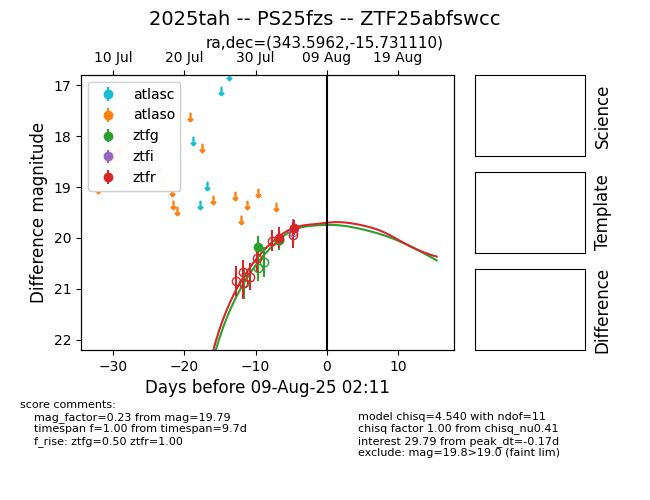

Target 2025tah at 2025-08-08 19:36, see:
FINK: fink-portal.org/2025tah
Lasair: lasair-ztf.lsst.ac.uk/objects/2025tah
ALeRCE: alerce.online/object/2025tah
TNS: wis-tns.org/object/2025tah
YSE: ziggy.ucolick.org/yse/transient_detail/2025tah
alt names
ZTF25abfswcc (ztf,fink)
2025tah (tns,yse)
PS25fzs (panstarrs)
coordinates:
equatorial (ra, dec) = (343.5962,-15.73111)
galactic (l, b) = (49.6806,-60.57011)
photometry
last ztfg=20.04, ztfr=19.79
3 ztfg, 2 ztfr detections
